Get Your Hands on SpectroDraw Pro: Public Preview Live Now!
3 min read • Published: Feb 21, 2026
The first public preview of SpectroDraw Pro is officially live. This version includes the full program and all Pro features except for exporting. You can access it directly from the buy-pro page, and the preview will remain available even after the early-access promotion ends.
Take me to the preview!
Major New Features
Professional interface
SpectroDraw Pro introduces a fully dockable window system, replacing the fixed panels of the original version. Arrange, hide, or minimize windows to create a workspace tailored to your workflow.
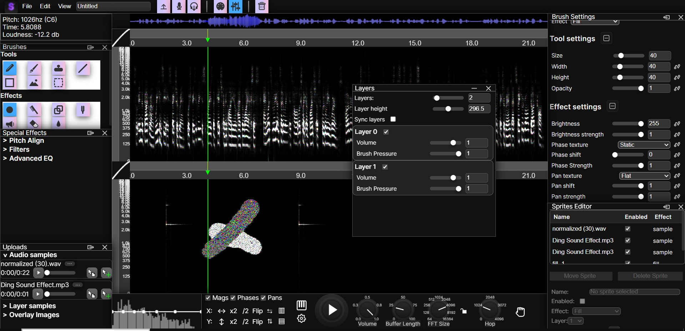
Stereo audio
Each spectrogram now supports independent left and right channels. Pan is displayed as saturation by default, and you can freely assign magnitude, phase, and pan to HSV, RGB, or YCbCr color models for advanced visualization control.
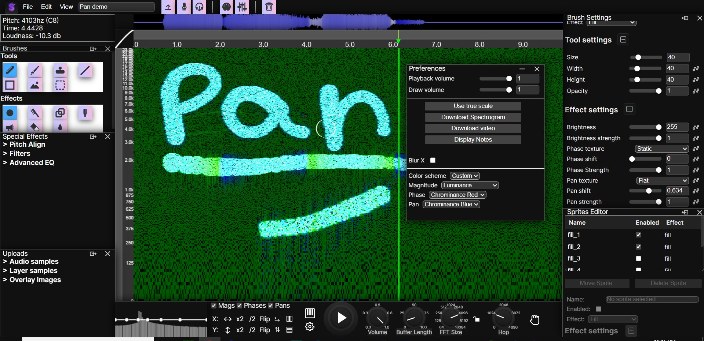
Synth brush
Draw synthesized sounds directly onto the spectrogram using customizable harmonics, chorus, and tone shaping.
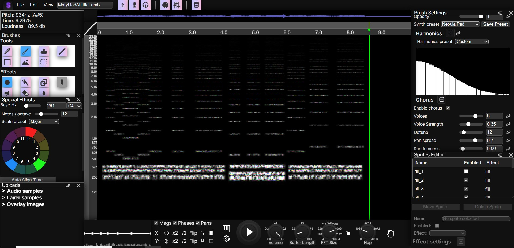
Code expressions
Write custom JavaScript expressions to control any brush parameter. This allows deep automation and creative effects, like linking mouse position to brightness to generate dynamic fades. A full list of controllable parameters is available here.
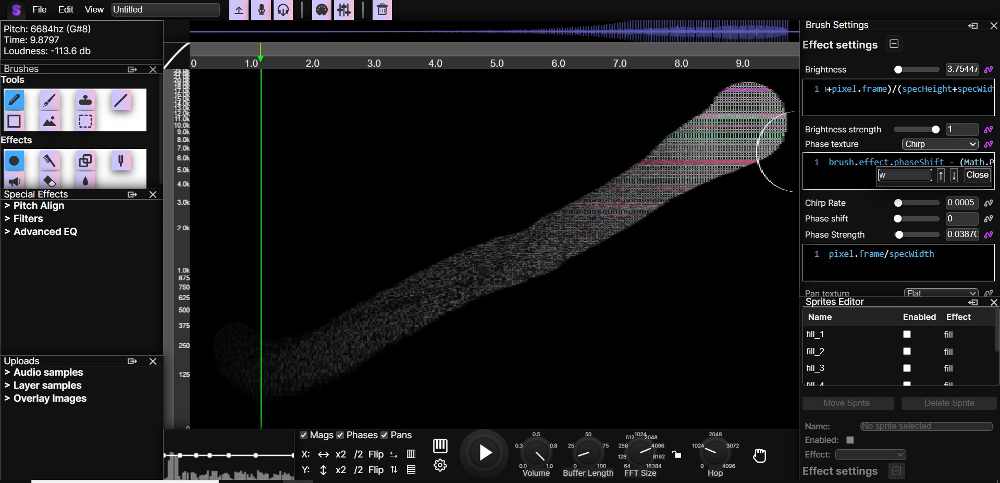
Sprites system
Every drawing on the spectrogram becomes its own editable sprite. Move, tweak, enable, disable, or readjust past edits at any time, making it easy to undo mistakes or tweak past actions.
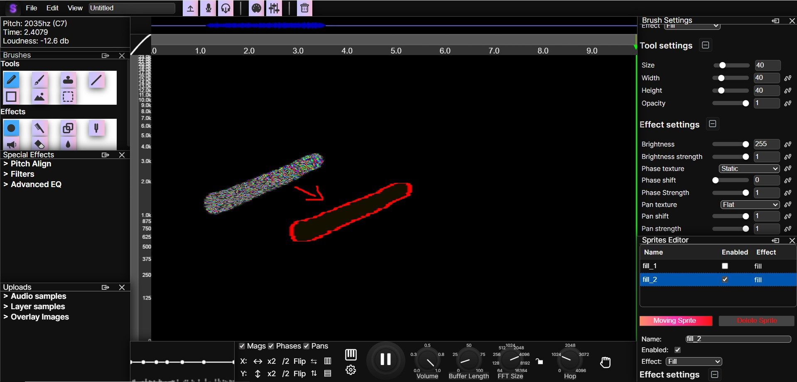
Piano mode
Instead of directly playing the spectrogram audio, this mode converts it to MIDI and performs it using a customizable synthesizer for new creative possibilities.
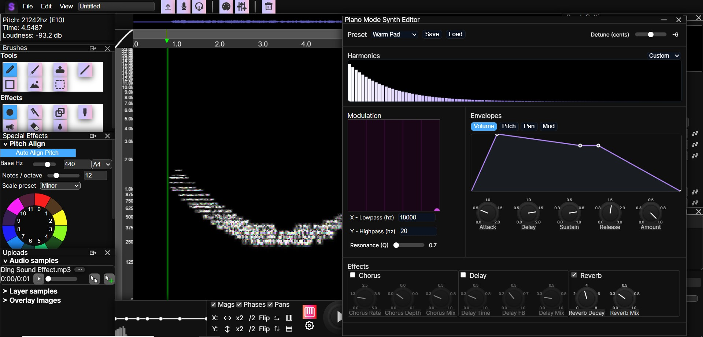
Multi-layer spectrograms
Work with up to 16 independent layers, each with its own stereo spectrogram and mix controls.
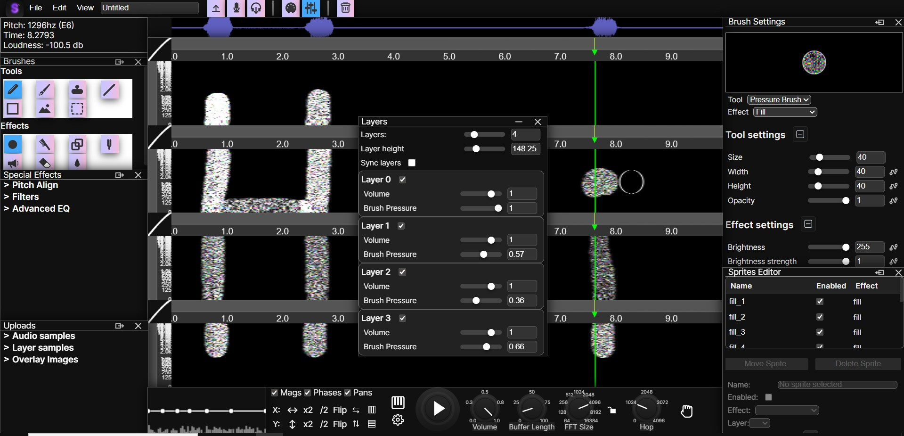
Additional Improvements
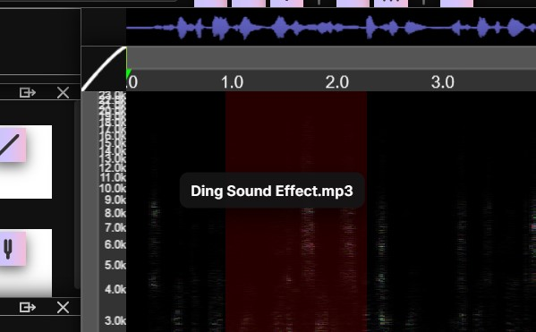
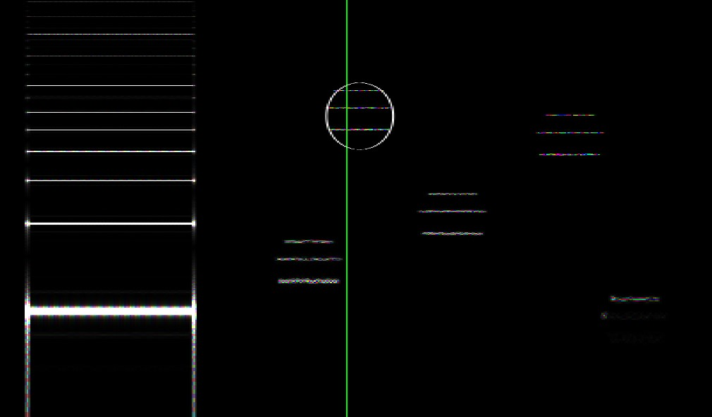
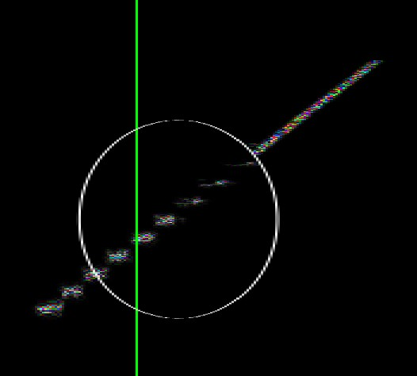
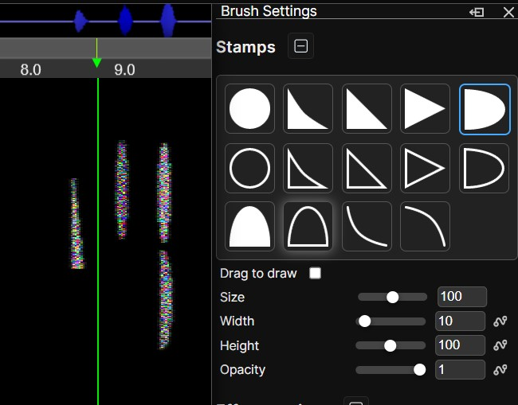
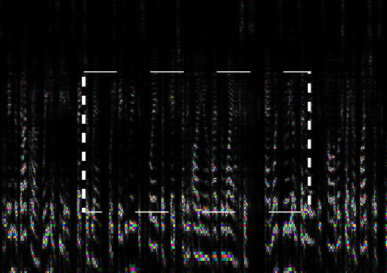
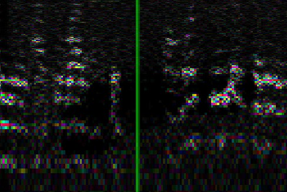
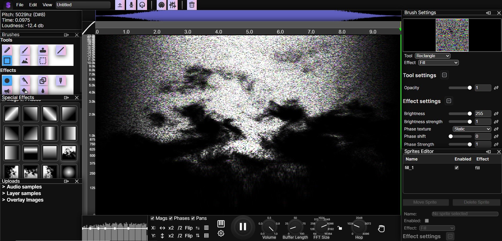
Important note before using
This preview is provided for evaluation purposes only. Any attempt to copy, record, or distribute the SpectroDraw Pro sneak peek is strictly prohibited. Access sessions are monitored, and violations may result in removal of access and potential legal action. If misuse becomes widespread, the preview may be removed from the internet.
Over the past three months, I’ve dedicated hundreds of hours to building SpectroDraw Pro into a powerful, flexible, and genuinely useful tool. This is just the beginning of what SpectroDraw Pro can do.
Go to SpectroDraw Pro Preview!